The review
parkrun, by the numbers sets itself an unusually disciplined task and mostly delivers on it. Its thesis — that the largest repeated measurement of ordinary human behaviour is governed by psychology, survivorship, climate and culture rather than fitness — is stated early and earned repeatedly. The book's signature move is the controlled reveal: a too-good result (women peaking in their eighties, parkrun 'getting slower') is dangled, then dismantled with the exact confound that faked it. This running honesty is its greatest asset and the thing that elevates it above the genre of charming-fact infographics.
The first three chapters are genuinely excellent. The agglomeration finding (crowding makes events bigger, not smaller), the lognormal-slid-by-passport size distribution, the round-number stampede that scales with the prize, and the milestone t-shirt that is 'both a hook and a trapdoor' are the kind of insights that reframe a familiar thing. Chapter 3's argument — that belonging, not fitness, predicts persistence, capped by a participation Gini more unequal than world income — is the book's intellectual peak and its clearest through-line.
What drags is repetition and imbalance. The book is in love with Bushy Park, and by Chapter 4 the reader notices that a chapter titled 'is parkrun the same everywhere?' keeps answering with the same English park's weather. Three weather figures and two near-identical festive-barcode figures could be two. The age-by-sex curve is drawn three times. Chapter 1 stacks four abstract scaling laws before any human lands. Meanwhile the two chapters with the highest stakes — a planet pausing, a global ritual balanced on a few unpaid people — are starved at two figures each, one of which is a methodological footnote. The emotional payoff and the page count are inversely correlated.
The single change that would most elevate the book: rebalance toward the human questions it raises but does not answer. It tells us loyalty is collapsing without ever showing what flips a first-timer into a regular; it ends Chapter 5 on 'the runners are the ones who didn't return' without saying who they were; it calls the volunteer core fragile without measuring its concentration. Each of these is answerable from data already in hand. Cut eight or nine darlings, merge the weather and festive pairs, and spend the recovered space on the people — the returners, the no-shows, the crew. The result would be a tighter, braver book that closes the loop it so elegantly opens.
Cut from the book (9)
Killing darlings. Each of these was real work, but earned its place no longer.
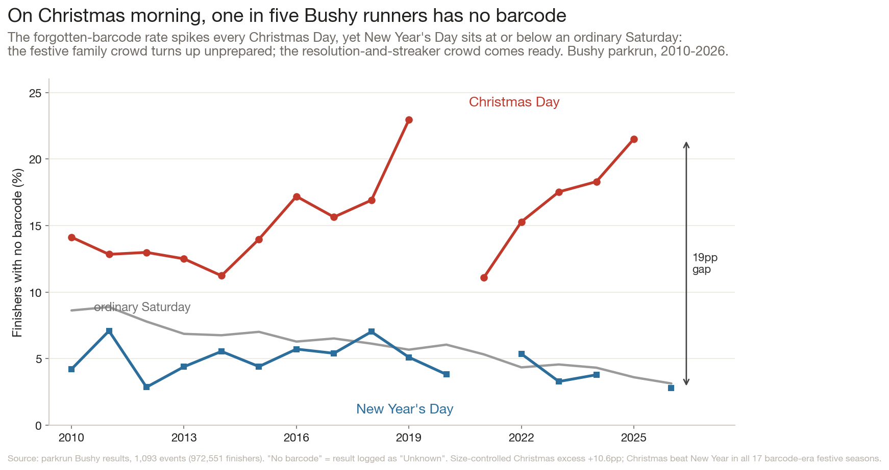
unknown_rateRedundant with special_dates: both are the Christmas-vs-New-Year unscanned-barcode story at Bushy, same metric and same chart shape — keep special_dates (cleaner two-date contrast) and fold the +10.6pp size-controlled number into its caption.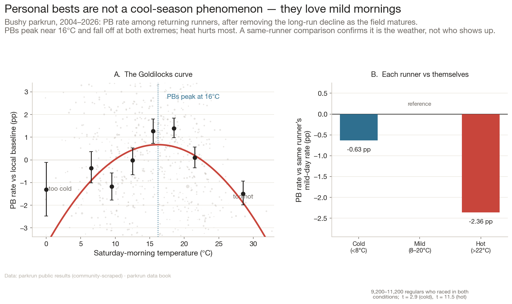
pb_seasonalityTwo-that-should-be-one with weather_pb: both are detrended/deseasonalised weather-on-PB-rate at Bushy; merge the temperature inverted-U and the wind effect into a single 'what steals a PB' panel and cut the duplicate.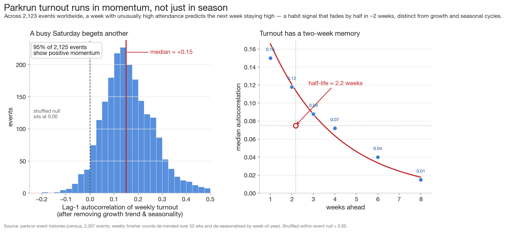
turnout_momentumWeak, abstract finding (lag-1 ACF +0.15, 2-week half-life) that is off-theme in a chapter titled 'is parkrun the same everywhere?' — it is about time-series memory, not place, and the human payoff is too thin to earn a figure.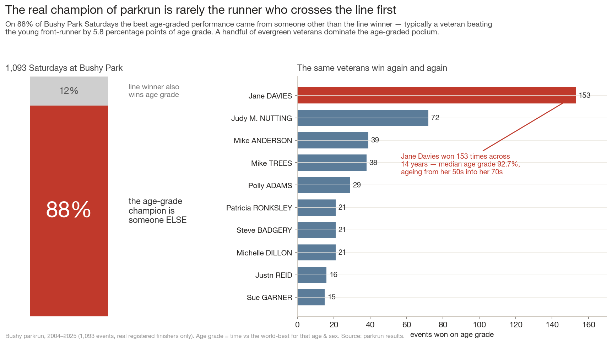
agegrade_championA single fun-fact (87.8% of the time the winner isn't the age-grade champ) stretched into a figure; the right panel is just a leaderboard of names, and the point is already implied by the sex/age-grade crossover figure.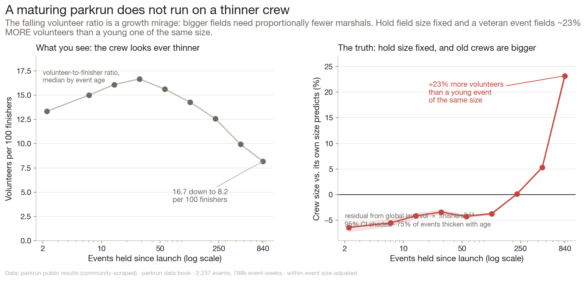
volunteer_lifecycleA methodological footnote to volunteer_economy ('the thinning is size not age') rather than an independent finding; demote it to a robustness sentence inside the volunteer_economy method box.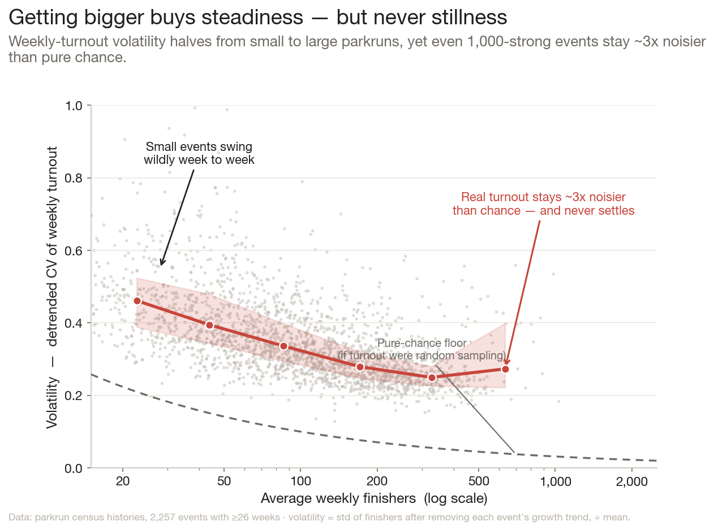
event_volatilityOver-technical N-scaling figure (detrended CV vs 3x Poisson floor) that adds a fourth abstract Chapter-1 shape after growth_curves, geography_shape and event_size_inequality; the human reader gets diminishing returns and the chapter is the densest in the book.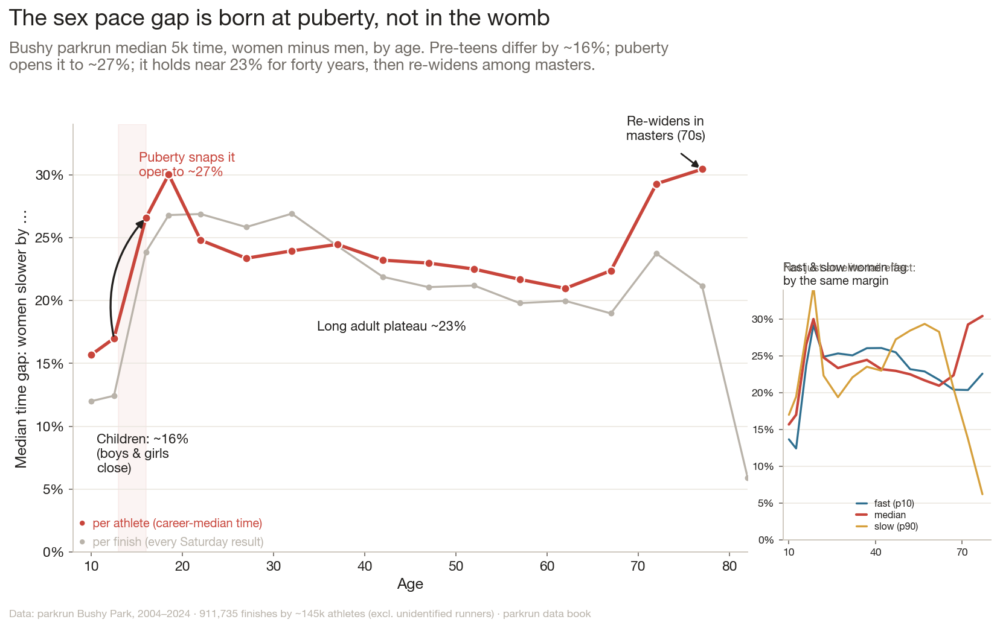
gender_pace_gapOverlaps the age_curve and sex_age_curve_crossover figures — a third age-by-sex Bushy curve; the puberty-snap-then-plateau is a good fact but can live as a one-panel callout merged into the crossover figure rather than a standalone. names_generationsClever but redundant with age_pyramid (both say 'Bushy is ageing'); the name-cohort divergence is a curiosity that softens, rather than sharpens, the harder demographic finding next to it — cut or demote to a sidebar.
names_generationsClever but redundant with age_pyramid (both say 'Bushy is ageing'); the name-cohort divergence is a curiosity that softens, rather than sharpens, the harder demographic finding next to it — cut or demote to a sidebar.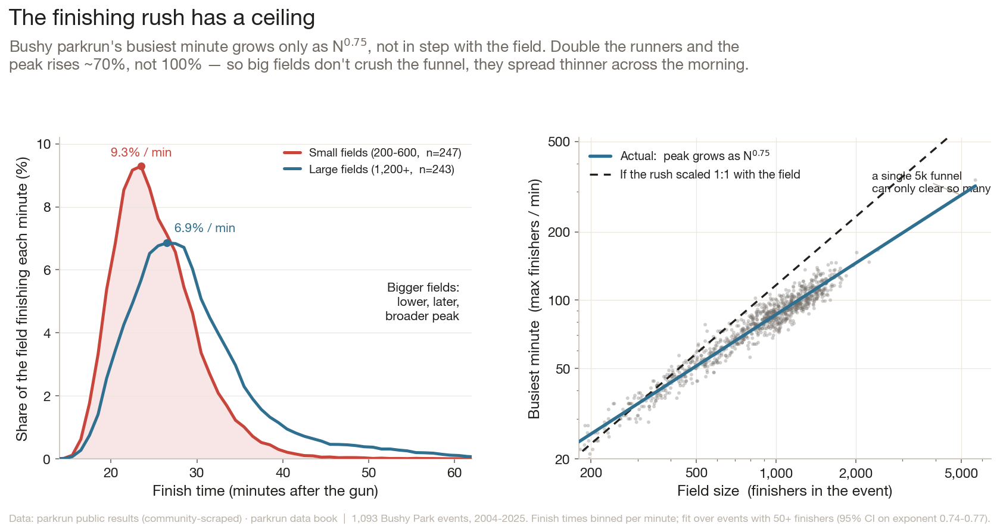
finishing_rushBorderline keep, but if the book must reach 30 it goes: the N^0.75 busiest-minute scaling is a nice mechanism but a niche one, and it sits in an already-crowded Chapter 1 without advancing the 'who keeps showing up' through-line.
Commissioned to fill the gaps (5)
New analyses the editor judged the book needed — built and shown here.
Who is actually holding up the cones?
Chapter 6 - The fragile scaffolding
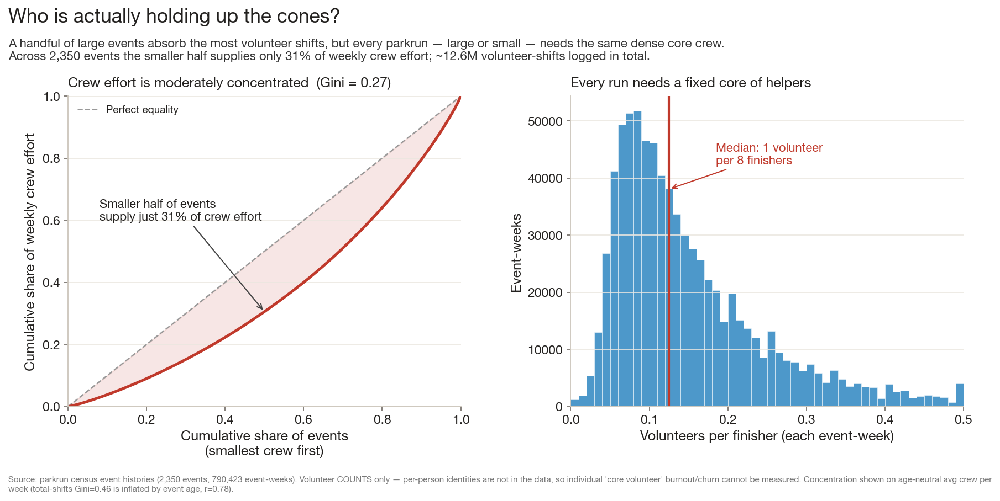
How this was made — data, maths & stats
Data. Worldwide census, 2,350 events, 790,423 event-weeks, 12.59M volunteer-shifts — but volunteer counts only, no identities.
Method. Person-level ‘core crew’ concentration is therefore impossible; pivoted to event-level concentration of weekly crew effort and the volunteer-to-finisher ratio.
Maths & stats. Median ratio 0.125 ≈ 1 volunteer per 8 finishers (p10 0.06, p90 0.31); age-neutral Gini = 0.27 for average weekly crew.
Robustness. Total-shifts Gini (0.46) discarded — it correlates r=0.78 with event age, measuring longevity not concentration. Defunct events absent (census = live events).
Why it earns a place: Chapter 6 makes the strongest moral claim in the book — the whole edifice rests on a thin unpaid core — but supports it with only a scaling-law and a debunked artifact. A concentration/churn figure would give that claim the same teeth the participation_gini gives Chapter 3, closing the book's central 'who keeps showing up' loop on the people who set the alarm.
The nomads: runners who collect parks
Chapter 3 - Who keeps showing up
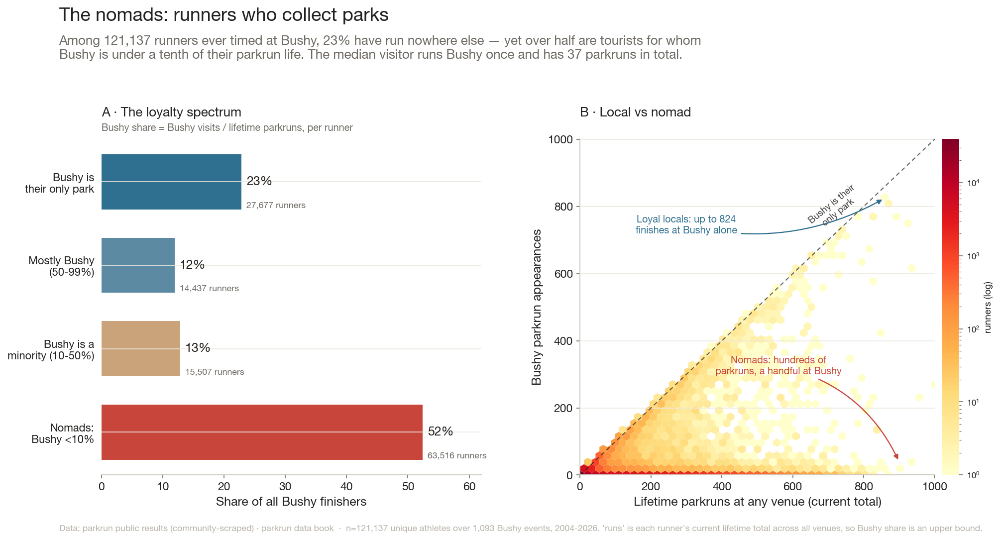
How this was made — data, maths & stats
Data. All 121,137 unique registered athletes ever timed at Bushy (dropping ~56k unknown/no-barcode rows, athlete id 2214/blank). Each carries a current lifetime runs total across all venues.
Method. For each runner, compare Bushy appearances to lifetime runs to gauge how local vs touristic they are.
Maths & stats. Bushy share = bushy_appearances / lifetime_runs. 22.8% have share = 1 (Bushy-only); 52.4% have share < 0.1 (nomads); median visitor = 1 Bushy run of 37 lifetime.
Robustness. runs is the current total, so the share is a lower bound on a runner’s local-ness at their last visit; each athlete counted once (not per finish). Bushy-specific.
Why it earns a place: The book repeatedly hits the limitation that Bushy loyalty under-counts true parkrun loyalty (it flags this caveat in survival_loyalty, comeback_gaps, milestone_magnetism). A tourism figure turns that caveat into a finding and explains the systematic gap, strengthening Chapter 3's argument instead of apologising for it.
The second-run hook: what predicts a return
Chapter 3 - Who keeps showing up
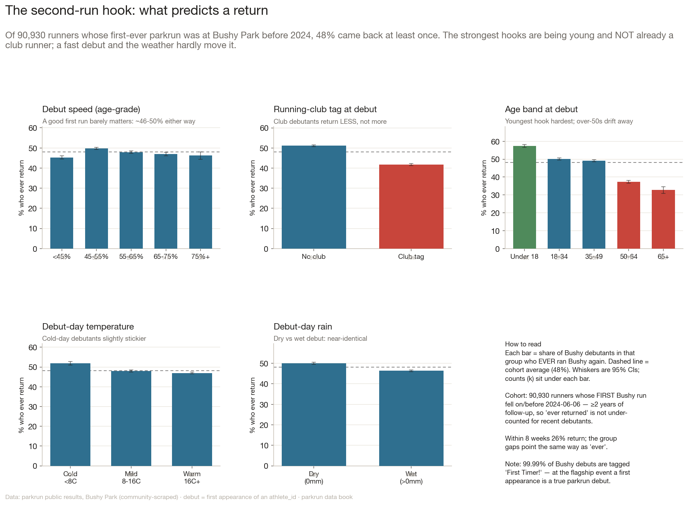
How this was made — data, maths & stats
Data. 90,930 runners whose first-ever parkrun was Bushy, debuting on/before 2024-06-06 so each has ≥2 years of possible follow-up.
Method. Return rate (ever, and within 8 weeks) split by day-one features: debut age-grade band, club tag, age band, debut-day weather.
Maths & stats. 48.1% ever return; 25.8% within 8 weeks. Age gradient 57%→33% (young→old); club lowers return (42% vs 51%); debut speed nearly flat. Univariate splits.
Robustness. Cohort cut-off removes censoring; the runs column (future-leaking) was not used as a feature; splits are descriptive not causal; Bushy-only return undercounts those who switched venue.
Why it earns a place: Chapter 3 establishes that loyalty is collapsing and that belonging beats fitness, but never answers the reader's most natural question — what actually flips a one-and-done into a regular? This is the actionable heart of the book's stated thesis ('what does it take to get people to keep showing up?') and it is currently asserted rather than shown.
Beyond the Anglosphere: who the rest of the world recruits
Chapter 4 - Is parkrun the same everywhere?
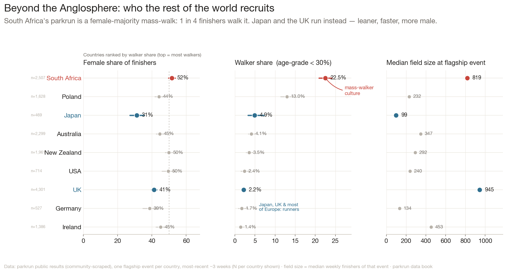
How this was made — data, maths & stats
Data. The 9-country age-grade sample (latest ~3 weeks of one flagship event per country, 469–4,301 finishers each) plus census median field sizes.
Method. Per country compute female share, walker share, and median field size for one comparative panel.
Maths & stats. Walker share = fraction scoring age_grade < 30%. SA 52% female / 22.5% walkers; Japan 31% / 4.9%; UK 41% / 2.2%; 16× walker-share spread.
Robustness. One flagship event represents each country — strong selection; flagships are atypically large. Descriptive cross-section, not a national census.
Why it earns a place: The book is overwhelmingly Bushy-centric (it admits this in the epilogue). Chapter 4 promises 'is parkrun the same everywhere?' but most of its figures are still Bushy weather/PB studies. One genuinely cross-national demographic figure would rebalance the book toward its global claim and give the agegrade_by_country figure a human companion.
The runners who never came back
Chapter 5 - The planet hits pause
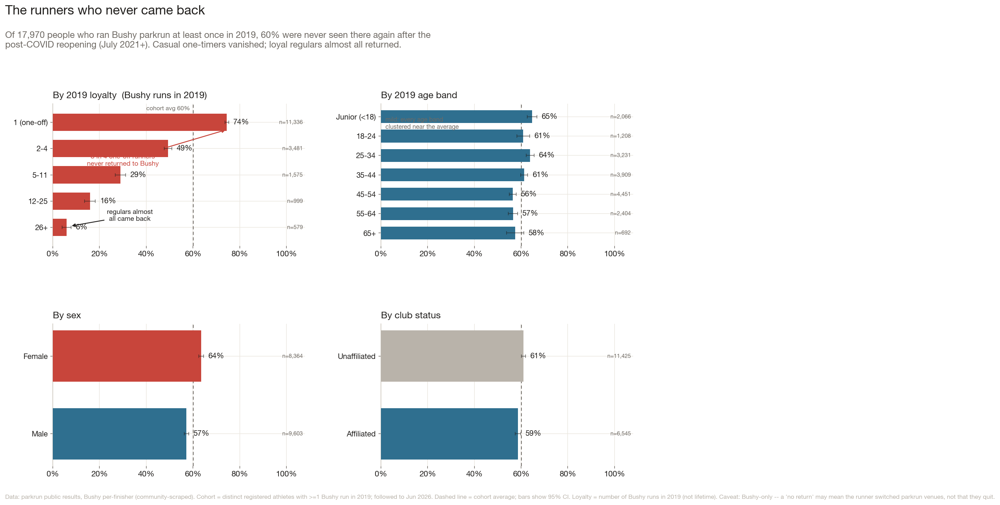
How this was made — data, maths & stats
Data. 17,970 distinct registered runners who ran Bushy ≥1 time in 2019.
Method. Fraction who never appeared at Bushy again after the July-2021 reopening, broken down by 2019 loyalty tier, age band, sex and club status.
Maths & stats. 60.2% never returned. Loyalty gradient: one-off 74.5% → 2–4 runs 49% → 5–11 29% → 12–25 16% → 26+ 5.9%. Age bands flat (56–65%); club 61% vs 59%.
Robustness. Full window to 2026 (conservative; a 1-year window gives 76%). Bushy-only, so venue-switchers count as lost; the female–male gap is mostly a loyalty-mix confound.
Why it earns a place: Chapter 5 is the thinnest in the book (only 2 figures) and ends on the haunting line that 'the runners are the ones who didn't return' — yet never says who they were. Answering that converts a rhetorical flourish into evidence and ties the pandemic chapter directly back to the loyalty and demographics findings of Chapter 3.